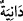

22. Yüce bir cennette.
İbn Abbas (r.a.) der ki: Kitabı sağ tarafından verilen kimseler yaşarlar, ölmezler.
Sıhhatlidirler, hasta olmazlar; nimetlenirler ve ebediyen fakirlik görmezler. Bu kimseler
yükseklerde olan cennetlerde hayat sürerler. Çünkü cennetler göktedirler. Cehennem ise
-cennetin aksine- alçaktadır. Çünkü o yerin dibindedir.
Kitabı sağ taraftan verilecek kimseler yüksek cennetlerde olabilecekleri gibi yüksek
derecelerde veya yüksek binalarda ya da ağaçları yüksek cennetlerde de
olabileceklerdir. Bu takdirde “âliye/yüksek” kelimesi, asıl olması gereken kimsenin
dışında cari sıfatlardan olur. Buna göre kelime, “ıyşe” kelimesinden bedel olur. Bunun,
“ıyşe râdiye” ifâdesine bağlı olması da mümkündür. Buna göre; “kitabı sağ tarafından
verilecek kimse hoşnud bir hayatı yüksek cennetlerde sürer” denmiş olur.
23. Meyveleri sarkmış.
Âyette yer alan “
/kutûfuhâ” kelimesi “kıtf” kelimesinin çoğuludur. Arapçada
“kıtf”, koparılan ve hızlıca daldan devşirilen meyve, demektir. “Katf” ise masdardır.
Sa’dî Müftî’nin ifâdesine göre; “katf” kelimesinin içerisinde “hız ve sürat” anlamı
olduğu tartışılır. İbnu’ş-Şeyh der ki; sür’at mânâsı her şeyi bir seferde koparma
niteliğinden anlaşılmaktadır. Kamus’un ifâdesine göre; “kıtf” salkım demektir. Ayrıca bu
kelime dalından koparılmış meyvenin adıdır. Şu hâlde “burada ister üzüm, ister başka
meyve olsun devşirilen bütün meyvelere bu kelime tağlip yoluyla isim olarak
verilmiştir” demeye ihtiyaç yoktur.
“
/Dâniye” kelimesi “dünüvv” masdarından türemiş olup anlamı “yakınlıktır.”
Âyetteki anlamı ise “kendisini isteyenlere yakın meyveler” demektir. Yâni onların
salkımları elin ulaşacağı yakınlıktadır.
Bu meyveler yemek isteyenlere öyle yakın olacaktır ki ayakta duran, oturan ve yatan
hiç yorulmadan ona ulaşabilecektir. Bâzı âlimlere göre; “meyveleri yakın” ifâdesiyle
kasdedilen, olgunlaşması gecikmeyen meyveler demektir. Cennetteki kişi meyveyi
ağzına yaklaştırdığında -dünya meyvelerinin aksine- meyveler kendiliklerinden o kişinin
ağzına yaklaşacaklardır. “Dünya meyvelerinin aksine” dedik, çünkü dünyada
meyvelerin koparılmaları ve devşirilmeleri çoğunlukla insana yorgunluk verir. Yine
dünya meyveleri el uzatılmadan yenmez.
Fakir (Bursevî)’ye göre cennetin ağaçları insanın sûretindedir. Bir başka ifâdeyle
insanın aslı (kökü) başıdır ve insanın başı yukarıdadır, ayakları ise insanın dallarıdır,
dalları da aşağıdadır. Cennet ağaçları tıpkı insanın durumu gibidir, kökü yukarda,
dalları aşağıya doğru sarkıktır. Bu nedenle cennet meyvelerini koparan insan bunu
koparırken herhangi bir yorgunluk duymaz. Üstelik cennet nimeti ondan yararlanan